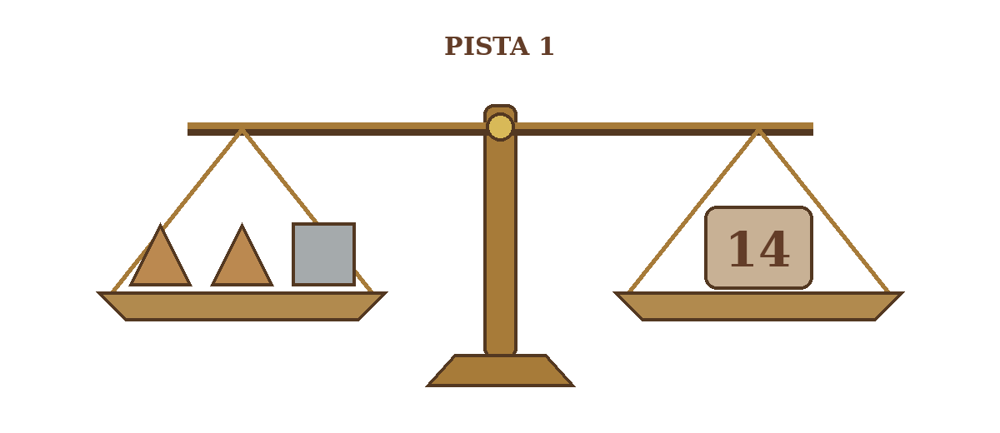
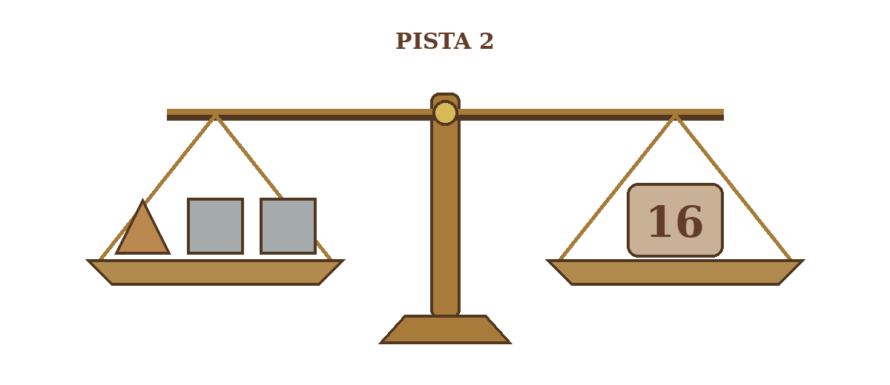
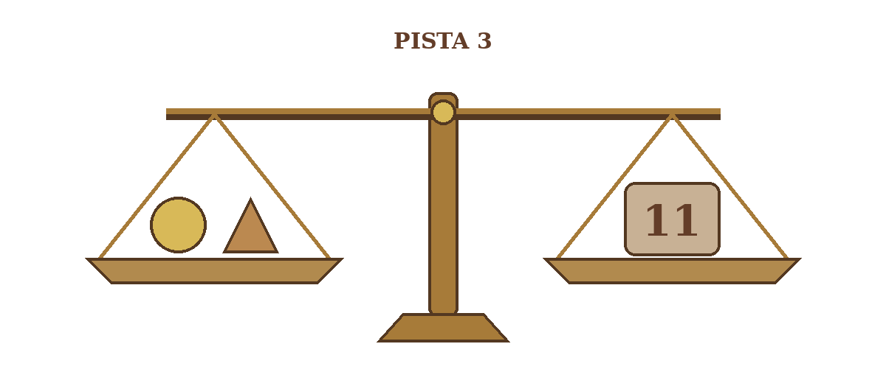
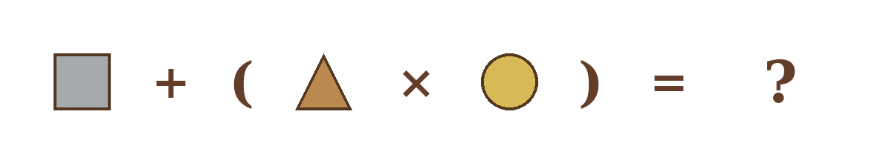

A Balança do Mestre Construtor
10 pontos
O mestre construtor do castelo guardava seus projetos em um cofre. Para protegê-los, criou uma senha usando três peças de metal: um triângulo, um quadrado e um círculo.
Cada figura possui um peso fixo. Antes de partir, ele deixou três pistas e uma última operação. Descubra os valores das peças e calcule a senha do cofre.
As balanças estão em equilíbrio. Peças com a mesma forma têm sempre o mesmo peso, independentemente da posição.



Qual é a senha do cofre?
